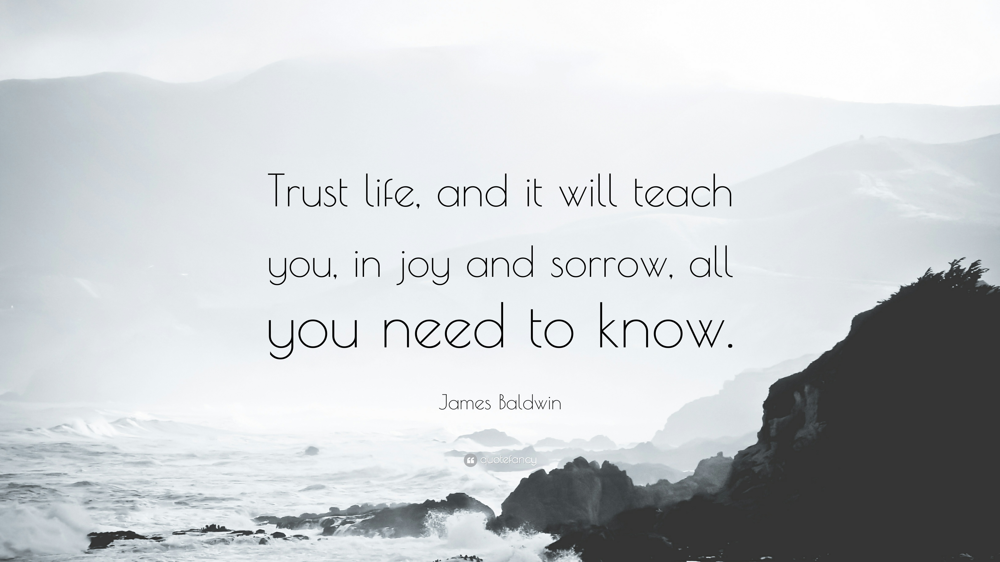

Trust Life - It has your back
July 6, 2022 by Mike Bryson
When you begin to look into the deep realms of reality fear will come up, even terror and panic might come up. The ego will not approve of your deep self-inquiry and it will defend its views and beliefs, it will throw fits, it will reject, it will grasp for experiences that feels good.
It will protect itself in any way it can.
Really deep existential questions such as “who am I” scares the shit out of the ego because when you begin to discover who you really are it means the death to the ego.
Look anyway, and go all the way in the process of awakening.
Don’t stop half-way just because it starts processes in your life that will turn everything upside down.
Not that you can stop once you’re in it, but you have the choice of going through it with resistance or you can surrender to it, trusting Life to take you all the way.
Be ruthlessly dedicated to know the Truth and It will set you free.